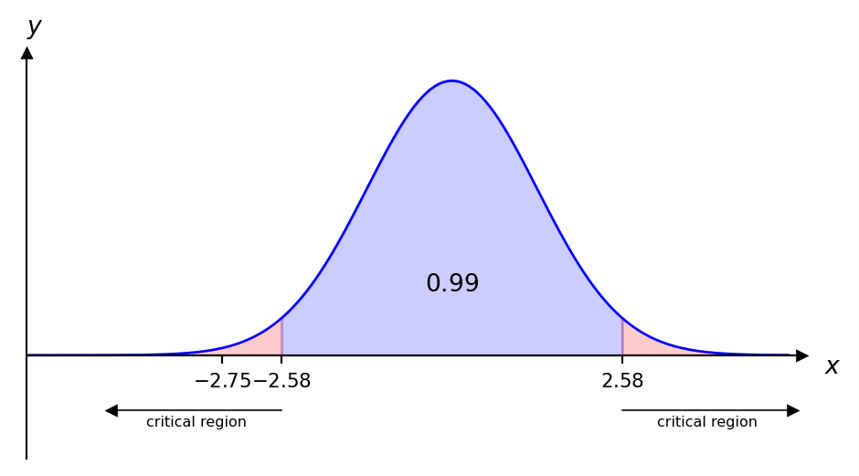
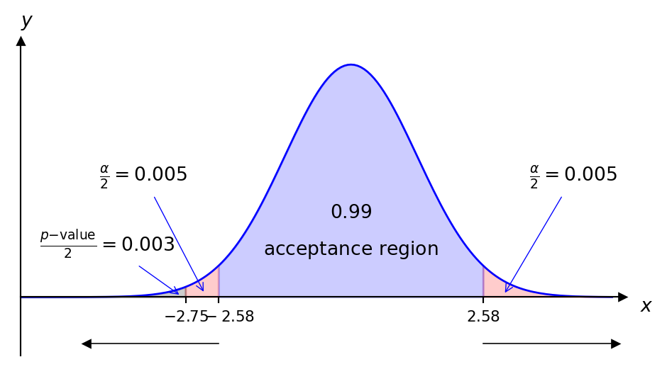
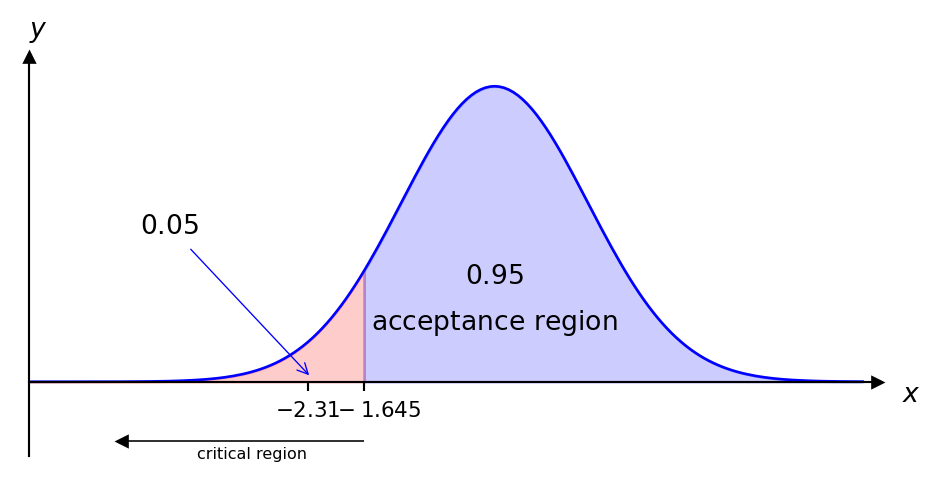
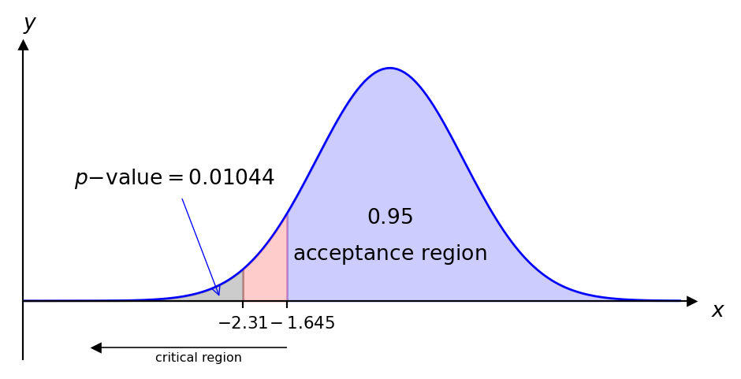
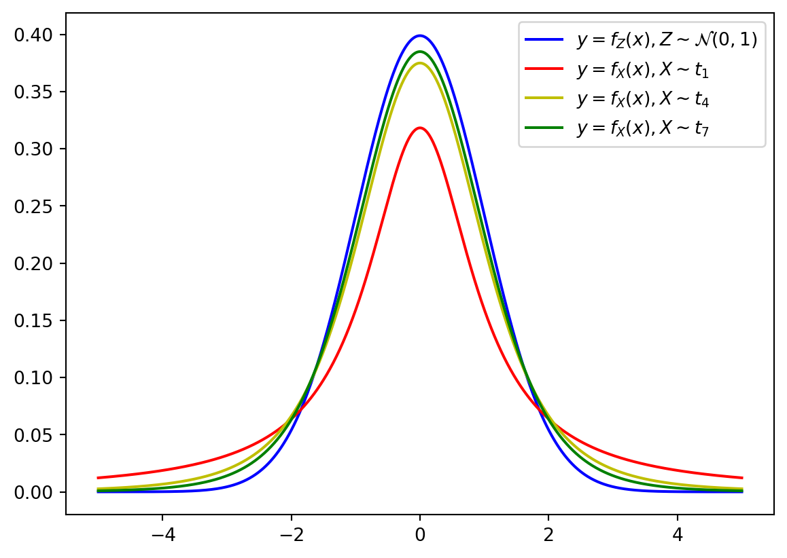

7 Hypothesis Testing: \(Z\)-tests and \(t\)-tests
\[ \renewcommand{\P}{\mathbb{P}} \renewcommand{\E}{\mathbb{E}} \newcommand{\R}{\mathbb{R}} \newcommand{\var}{\mathrm{Var}} \newcommand{\cov}{\mathrm{cov}} \newcommand{\corr}{\mathrm{corr}} \newcommand{\dx}{\,\mathrm{d}x} \newcommand{\dy}{\,\mathrm{d}y} \newcommand{\eps}{\varepsilon} \]
This chapter follows chapter 17 of by G.M.Clarke and D.Cooke. Another useful resource is by S.Lakin.
In many situations of uncertainty we have to make a choice between two possible alternatives, for example, given a coin we might ask whether it is fair. In this section we deal with the problem of finding a method for choosing between two possible outcomes.
For example, if \(p\) denotes the probability that a coin lands heads when flipped the hypotheses could be
\(p=\frac12\)
\(p\neq \frac12\).
When we are faced with two hypotheses we call one of them the null hypothesis and denote it by \(H_0\) and the other the alternative hypothesis and denote it by \(H_1\). Therefore in our previous example, the null hypothesis would be \(H_0:p=\frac12\) and the alternative hypothesis would be \(H_1:p\neq \frac12\).
The next natural question to ask is how we choose between \(H_0\) and \(H_1\)? We do this by obtaining a random sample from the distribution involved and then choosing a statistic, called the test statistic, whose value can be used to choose between \(H_0\) and \(H_1\).
Therefore for the coin example we might decide not to reject \[ H_0:p=\frac12 \] if after 10 flips of the coin the test statistic (no. of heads in the sample) lies between 3 and 7, or to reject \(H_0\) if the test statistic is at most 2 or at least 8.
We often specify a value for \(\alpha\), usually the largest value that we are prepared to tolerate and then look for a test with this value of \(\alpha\). The value of \(\alpha\) is then called the significance level of the test. If \(\alpha=0.05\), we say that we are testing \(H_0\) at the “5% level of significance” and, if the test rejects \(H_0\), we say that the null hypothesis is rejected at the \(5\%\) level.
There are two types of significance tests: one-tailed; and two-tailed. We use a two-tailed test when \(H_1\) is two sided (e.g. \(H_1:\mu\neq\mu_0\)). We use a one-tailed test when \(H_1\) is one-sided (e.g. \(H_1:\mu>\mu_0\) or \(H_1:\mu<\mu_0\)).
An alternative approach to using critical regions is using \(\mathbf{p}\)-values. Instead of specifying a critical region and deciding whether or not the test statistic lies within it, the probability of obtaining a value equal to, or more extreme than the test statistic is calculated. For a one-tailed test, this probability is called the \(p\)-value and it is then compared with the significance level probability \(\alpha\). For a two-tailed test, this probability is called the \(\tfrac{p-\text{value}}{2}\) and it is then compared with the significance level probability \(\frac{\alpha}{2}\). More on this later.
We cannot be sure of making the correct choice between \(H_0\) and \(H_1\). We can make two types of incorrect decision. We can reject \(H_0\) when it is actually true and we can accept \(H_0\) when it is actually false.
The probability of a type I error is usually denoted by \(\alpha\) (and type II by \(\beta\)).
The following steps summarise how we tackle questions of this type:
Determine \(H_0\), \(H_1\) and the significance level;
Decide whether a one or two-tailed test is appropriate;
Calculate the test statistic assuming \(H_0\) is true;
Compare the test statistic with the critical value(s) for the critical region or use the \(p\)-value approach;
Reject or do not reject \(H_0\) as appropriate.
We now deal with the different cases.
7.1 The Mean of \(n\) Observations from \(N(\mu, \sigma^2)\) (\(\sigma^2\) Known)
A random sample of \(n\) observations will be collected and a decision will be made by looking at the whole sample.
\(X\sim N(\mu, \sigma^2)\) then \(\overline{X}\sim N(\mu, \frac{\sigma^2}{n})\). Therefore given a null hypothesis which states that a random sample \(x_1, \ldots, x_n\) has been drawn from \(N(\mu, \sigma^2)\) we calculate \[ \bar{x}=\frac1n\sum_{i=1}^nx_i \] and test whether it has come from \(N(\mu, \frac{\sigma^2}{n})\). In this case our test statistic is \[ z=\frac{\bar{x}-\mu}{\frac{\sigma}{\sqrt{n}}} \] and we compare with the critical values or use the \(p\)-value approach in the usual way.
Example 7.5 A machine produces items having a nominal mass of \(1kg\). The mass of a randomly selected item \(x\) follows the distribution \(X\sim N(\mu, (0.02)^2)\). If \(\mu\neq 1\) then the machinery should be corrected. The mean mass of a randomly sample of 25 items was found to be \(0.989kg\). Test the null hypothesis that \(H_0:\mu=1\) at the \(1\%\) significance level.
We have
\(H_0:\mu=1\)
\(H_1:\mu\neq 1\)
\(\alpha=0.01\)
Since \(P(Z\leq 2.58)=0.995\) the critical region is \(|z|>2.58\) and the test statistic is given by \[ z=\frac{\bar{x}-\mu}{\frac{\sigma}{\sqrt{n}}}=\frac{0.989-1}{\frac{0.02}{5}}=-2.75. \]
Clearly \(-2.75\) is in the critical region, therefore we reject \(H_0\) at the \(1\%\) significance level and conclude that the machine settings should be corrected. Using the p-value approach we find:

In particular, \(P(Z\geq -2.75)=0.003<0.005 (\tfrac{\alpha}{2})\) and therefore we reject \(H_0\).
7.2 The Difference between 2 Means from Normal Distributions with Known Variances
If two samples are taken at random from normal distributions the first of size \(n_1\) from \(N(\mu_1, \sigma_1^2)\) and the second of size \(n_2\) from \(N(\mu_2, \sigma_2^2)\) the means of the sample may be calculated and compared. If the means are \(\bar{x}_1\) and \(\bar{x}_2\) respectively then the difference \((\bar{x}_1-\bar{x}_2)\) has the distribution \[ N(\mu_1-\mu_2, \frac{\sigma_1^2}{n_1}+\frac{\sigma_2^2}{n_2}). \] The theory then follows in the same way, with the test statistic being given by \[ \frac{(\bar{x}_1-\bar{x}_2)-(\mu_1-\mu_2)}{\sqrt{\frac{\sigma_1^2}{n_1}+\frac{\sigma_2^2}{n_2}}}. \]
Example 7.6 A sample of size 25 is taken from \(X\sim N(\mu_1, 66)\) and the mean \(\bar{x}\) was found to be 116, then another sample of size 25 is taken from \(Y\sim N(\mu_2, 66)\) and \(\bar{y}\) was found to be 109. Test the following at the \(5\%\) significance level.
\(H_0:\mu_1-\mu_2=12\)
\(H_1:\mu_1-\mu_2\neq 12\)
Since \(\alpha=0.05\) and we have a two-tailed test then the critical region is \(|z|>1.96\). The test statistic is \[ z=\frac{\bar{x}-\bar{y}-(\mu_1-\mu_2)}{\sqrt{\frac{\sigma_1^2}{n_1}+\frac{\sigma_2^2}{n_2}}}=\frac{7-12}{\sqrt{5.28}}=-2.17. \] Since \(-2.17<-1.96\) then \(-2.17\) is in the critical region and we reject the null hypothesis and conclude that the difference between the means is not 12 at the \(5\%\) significance level.
7.3 Large Sample Tests
The central limit theorem can be used to do significance tests for non-normal distributions when the sample sizes are large enough (30 or more). When a normal approximation can be used, its mean and variance will be \(\mu\) and \(\frac{\sigma^2}{n}\) respectively. In this way we can test hypotheses about the means of distributions which are not themselves normal, provided a large sample of observations is available. We will the same methods to test hypotheses as before except that the test statistic will be only approximately \(N(0,1)\).
Example 7.7 The number of strokes a golfer takes to complete a round of golf has mean 84.1 and standard deviation 2.6. After lessons her mean is 83.1 in 36 subsequent rounds. At the \(5\%\) significance level test the null hypothesis that her standard of play is unaltered against the alternative hypothesis that it has improved, i.e.
\(H_0: \mu=84.1\)
\(H_1: \mu<84.1\) (one-tailed)
\(\alpha=0.05\) therefore the critical region is \(z<-1.645\)
We approximate the distribution of strokes by \(N(\mu, \frac{2.6^2}{36})\) and the test statistic is given by \[ z=\frac{\bar{x}-\mu}{\frac{\sigma}{\sqrt{n}}}=\frac{83.1-84.1}{\frac{2.6}{6}}=-2.31. \] This lies in the critical region therefore we reject the null hypothesis and conclude that her game seems to have improved.

Alternatively, using the \(p\)-value approach we find \(P(Z\leq -2.31)=0.01044<0.05\) and therefore we reject the null hypothesis.

As mentioned in the definition above, for the \(t\) distribution we require the degrees of freedom, this is \(n\) minus the number of samples ((\(n-1\)) above due to the single sample).
The degrees of freedom come from the number of values that are free to vary. Let us suppose we have 4 numbers (\(a,b,c,d\)) and we know that the mean of these is 5. This means that \[ a+b+c+d=20 (4\times5). \] Note that once we know 3 of the numbers above, then we can calculate the fourth and therefore only 3 of them are “free”. In this case we would have \(3=4-1=n-1\) degrees of freedom.
Note that as \(n\to\infty\), the \(t\) distribution tends to the normal distribution. The \(t\) distribution has heavier tails than the normal distribution meaning that it is more likely to have values that fall further away from the mean.

t-tests
In the real world we often only have a random sample of data values with limited information about the underlying probability distribution. (Note that in the cases above the variance of the distribution is known.) The next natural question to ask is whether we can still perform hypothesis tests in these scenarios? Fortunately we can and we make use of the \(t\) distribution. \(t\)-tests may be performed on continuous data, possibly within an interval, for example, exam results as a percentage. We may also use \(t\)-tests on data which have 7 or more ordered categories. An example of such a data set could be the outcome of questions which have answers on the following 7 point Likert scale:
Strongly Agree
Agree
Agree Somewhat
Undecided
Disagree Somewhat
Disagree
Strongly Disagree
7.4 t-test: Comparing a Sample Mean
Suppose that \(X\sim N(\mu, \sigma^2)\) where \(\sigma^2\) is unknown and we wish to test the null hypothesis \(H_0:\mu=\mu_0\) against some alternative hypothesis. In this case we take a sample and we estimate \(\sigma^2\) by the sample variance \(s^2\), but the error in doing so, in particular when \(n\) is small, cannot be neglected and therefore we must use the test statistic \[ t=\frac{\bar{x}-\mu_0}{\frac{s}{\sqrt{n}}} \] which has a \(t\) distribution with \(n-1\) degrees of freedom. The rest of the theory is similar to what we have seen with the normal distribution only that we use the \(t\) distribution to calculate the critical region.
Example 7.9 Yarn breaking strength follows a normal distribution with mean of \(21N\). It is claimed that if the yarn is treated with a chemical then the mean breaking strength increases. A random sample of 9 lengths are taken, the value of the sample mean and sample standard deviation are 22.75 and 2.109 respectively. Test the following:
\(H_0:\mu=21\)
\(H_1:\mu>21\) (one-tailed)
\(\alpha=0.05\)
The critical region is obtained by the \(t\) distribution: \[ t>t_{0.05, 8}\quad \implies \quad t>1.860. \] The test statistic is given by \[ t=\frac{22.75-21}{\frac{2.109}{\sqrt{9}}}=2.5. \] This value is clearly in the critical region therefore we reject the null hypothesis and accept the claim at the \(5\%\) significance level. Note that \(p\)-values can also be used to reject the null hypothesis or not - this will be seen in the lab class.
7.5 Paired t-test
Many statistical applications use paired data samples to draw conclusions about the difference between two population means. Data pairs occur very naturally in “before” and “after” situations, where the same object or item is measured before and after a treatment. Such data pairs are very common in science and business. Clearly in this situation the sample sizes will be equal. Assume we have \(n\) pairs and let \(X_1\) and \(X_2\) be the random variables that denote the observations made on the \(n\) pairs (the “before” and “after”) with means \(\mu_1\) and \(\mu_2\) respectively. The idea is to consider the difference \(D=X_1-X_2\), assumed to be a normally distributed random variable, with mean \(\mu_1-\mu_2\) and the null hypothesis may be that \(\mu_1\) and \(\mu_2\) differ by a stated amount, say \(\mu_0\) (\(\mu_0\) is often 0, i.e. the means do not differ). The test statistic we use in this scenario is \[ t=\frac{\bar{D}-\mu_0}{\frac{s_D}{\sqrt{n}}} \] where \(s_D\) is the sample standard deviation of \(D\) and \(t\) has a \(t\) distribution with \(n-1\) degrees of freedom.
Example 7.10 Ten joints of meat are cut in half; one half is frozen and wrapped by process A and the other is frozen and wrapped by a new process B. The halves are placed in ten freezers with halves of the same joint being put in the same freezer. The number of days to spoilage are found to be:
| Joint number | \(1\) | \(2\) | \(3\) | \(4\) | \(5\) | \(6\) | \(7\) | \(8\) | \(9\) | \(10\) |
|---|---|---|---|---|---|---|---|---|---|---|
| Process A | \(63\) | \(109\) | \(82\) | \(156\) | \(161\) | \(155\) | \(47\) | \(141\) | \(92\) | \(149\) |
| Process B | \(129\) | \(105\) | \(76\) | \(207\) | \(253\) | \(146\) | \(62\) | \(160\) | \(90\) | \(177\) |
Assuming the differences between these number-pairs to be normally distributed, test:
\(H_0:\mu_D=\mu_B-\mu_A=0\)
\(H_0:\mu_D=\mu_B-\mu_A\neq0\) (two-tailed)
\(\alpha=0.05\)
The sample mean and variances of the two processes are given by: \[ \bar{x}_A=115.5, \ \ \bar{x}_B=140.5, \ \ s^2_A=1800.94, \ \ s^2_B=3676.28. \] We first need to calculate the difference of the days to spoilage \(D\)
| Pair number | \(1\) | \(2\) | \(3\) | \(4\) | \(5\) | \(6\) | \(7\) | \(8\) | \(9\) | \(10\) | Total | Mean |
|---|---|---|---|---|---|---|---|---|---|---|---|---|
| \(D\) | \(66\) | \(-4\) | \(-6\) | \(51\) | \(92\) | \(-9\) | \(15\) | \(19\) | \(-2\) | \(28\) | \(250\) | \(25\) |
| \({D-\overline{D}}\) | \(41\) | \(-29\) | \(-31\) | \(26\) | \(67\) | \(-34\) | \(-10\) | \(-6\) | \(-27\) | \(3\) | \(0\) | |
| \((D-\overline{D})^2\) | \(1681\) | \(841\) | \(961\) | \(676\) | \(4489\) | \(1156\) | \(100\) | \(36\) | \(729\) | \(9\) | \(10678\) |
Then \[ s_D^2=\frac{1}{9}\sum_{\text{all pairs}}(D-\overline{D})^2=\frac{10678}{9}=1186.44. \] The test statistic is then given by \[ t=\frac{25-0}{\sqrt{\frac{1186.44}{10}}}=2.3. \] The critical region is given by \[ |t|>t_{0.025,9}\quad \implies \quad |t|>2.26. \] Clearly our test statistic is in the critical region and we therefore reject \(H_0\) and conclude that there is evidence that there is a difference in the effectiveness of the two processes.
7.6 Unpaired t-test
It is quite common to have data from two independent samples, for example not trying both drugs on every person in the sample, but trying one drug on some people in the sample and trying another drug on the rest. This would be an example of a situation where we might use an unpaired t-test. Assume that we have two samples chosen at random from normal distributions, the first of size \(n_1\) from \(X_1\sim N(\mu_1,\sigma^2)\) and the second of size \(n_2\) from \(X_2\sim N(\mu_2,\sigma^2)\). Note that both distributions have the same variance (albeit unknown) - this is important for this test. We estimate \(\sigma^2\) from the samples. We consider the difference between the sample means \(\overline{x}_1-\overline{x}_2\) with the null hypothesis that \(\mu_1-\mu_2=\mu_0\). The test statistic depends on the sample variances and this depends on whether the sample sizes are equal or not, i.e. \(n_1=n_2\) or \(n_1\neq n_2\).
If \(n_1=n_2\) then \(s^2=\frac{s_1^2+s_2^2}{2}\). If \(n_1\neq n_2\) then \[s^2=\frac{(n_1-1)s_1^2+(n_2-1)s_2^2}{(n_1-1)+(n_2-1)}.\] These are often called the pooled estimates of the variance \(\sigma^2\). Clearly, if the sample sizes are not equal then we must give greater weight to the larger sample; the appropriate weights are the degrees of freedom corresponding to each estimate of the variance. The test statistic is given by \[ t=\frac{(\bar{x}_1-\bar{x}_2)-(\mu_1-\mu_2)}{s\sqrt{\left(\frac1{n_1}+\frac1{n_2}\right)}} \] with \(n_1+n_2-2\) degrees of freedom. (This comes from \((n_1-1)+(n_2-1)=n_1+n_2-2\).)
Example 7.11 A trial takes place in which eight people are given only water, whereas another group of eight people are given a new energy drink. They then have to take part in an endurance task. The results of the trial are given in the following table.
| Mean | Standard deviation | |
|---|---|---|
| Water (\(x_1\)) | \(12.2\) | \(2.4\) |
| Energy drink (\(x_2\)) | \(13.1\) | \(3.1\) |
Note that these samples are independent; water and energy drinks are given to two different groups of people. Assuming the relevant assumptions hold, use an unpaired t-test to decide whether people who have taken the energy drink perform better at the 5% significance level, i.e.
\(H_0:\mu_1-\mu_2=0\)
\(H_1:\mu_1-\mu_2<0\) or \(\mu_1<\mu_2\) (Mean of “water” less than mean of “energy drink”)
Since both samples are of the same size, the pooled estimate of the standard deviation is given by \[ s=\sqrt{\frac{2.4^2+3.1^2}{2}}=2.7722, \] and the test statistic is given by \[ t=\frac{(12.2-13.1)-0}{{2.7722}{\sqrt\frac28}}=-0.6493, \] with \(n_1+n_2-2=14\) degrees of freedom. The critical region is given by \[ t<-t_{0.05,14}\quad\implies\quad t<-1.761. \] Since \(-0.6493>-1.761\) we do not reject the null hypothesis and conclude there is no evidence that the energy drink makes people perform better.